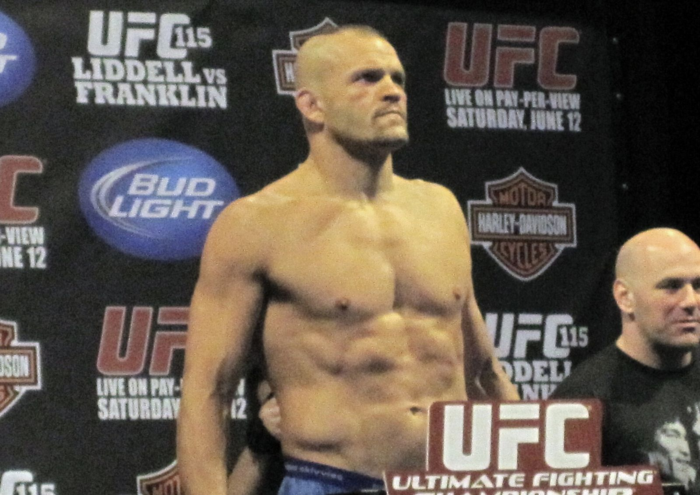

Accueil · UFC Paris 2026 · Pesée
UFC Paris 2026 : ce qu’il faut savoir avant la pesée officielle

À l’heure du 1er septembre 2026, la pesée officielle de UFC Paris n’a pas encore eu lieu. Cette page est une preview éditoriale : elle explique le protocole, rappelle qui est annoncé sur la carte et indique ce que nous publierons une fois les combattants montés sur la balance. Aucun poids n’est inventé ici.
Carte complète : UFC Paris 2026 — ordre des combats · Dossier : hub Paris 2026.
Qu’est-ce qu’une pesée UFC ?
La pesée est la formalité réglementaire qui précède presque tout événement MMA majeur. Chaque combattant doit monter sur la balance à une heure fixée par l’organisation, en présence des commissions sportives, afin de prouver qu’il respecte la limite de sa catégorie — ou la limite « catchweight » convenue si les parties ont accepté un poids hors norme.
En pratique, la pesée sert à trois choses :
- Valider le combat — un dépassement de limite peut entraîner une amende, un pourcentage du purse versé à l’adversaire, voire l’annulation du match si l’écart est trop important ;
- Officialiser la carte — les combats non pesés ou remplacés disparaissent de l’affiche ;
- Lancer le show médiatique — face-à-face, tension, déclarations : la pesée est devenue un rendez-vous à part entière pour le public.
À l’UFC, la pesée « officielle » intervient généralement la veille du combat, souvent en fin d’après-midi heure locale. Une « pesée cerémonielle » peut suivre le même jour ou le lendemain matin : les poids y sont déjà connus, l’enjeu est surtout promotionnel.
Pour UFC Paris 2026, prévu le samedi 5 septembre à l’Accor Arena, la pesée devrait logiquement se tenir le vendredi 4 septembre — date à confirmer par l’UFC. Nous mettrons cette page à jour dès que les chiffres seront publics et vérifiés.
Qui est sur la carte ?
Au 1er septembre, la carte reconstituée par UFC.FR — à partir des annonces UFC et des sources françaises — place Dan Hooker contre Salahdine Parnasse en main event poids légers. C’est le combat le plus attendu pour le public tricolore : les débuts à l’UFC du Français, face à un vétéran du division.
En co-main event ou haut de main card, le duel 100 % français Farès Ziam vs Axel Sola concentre aussi l’attention : expérience UFC contre élan du circuit ARES. Voir le focus : combattants français.
Le reste de la soirée mêle figures établies et préliminaires denses : Michael Page vs Nursulton Ruziboev, Morgan Charrière vs Felipe Lima, Oumar Sy, Matthieu Duclos, Nora Cornolle, Delphine Benouaich, etc. Le détail bout par bout est dans la carte complète.
Ce qu’il faudra regarder vendredi
Sans anticiper les chiffres, voici les angles qui comptent le jour de la pesée :
- Parnasse — premier passage à la balance UFC ; tout écart sur les 70 kg serait un signal ;
- Ziam vs Sola — même catégorie, même pression médiatique : la pesée fixe le ton du duel franco-français ;
- Combats féminins — Cornolle et Benouaich portent la visibilité tricolore ; les poids coqs et pailles laissent peu de marge ;
- Annulations — blessure ou raté de pesée la veille reste le scénario qui bouleverse une carte ; nous ne le simulons pas avant les faits.
Analyse stylistique du main event (sans lien avec la balance) : Hooker vs Parnasse.
Ce que nous publierons le 4 septembre
Lorsque la pesée aura eu lieu, cette page comportera :
- les poids officiels de chaque combattant annoncé ;
- le statut de chaque combat (maintenu, catchweight, annulé) ;
- les éventuels face-à-face ou déclarations saillantes, sourcées ;
- un renvoi vers le fil live du samedi et la page résultats.
Rappel : au 1er septembre 2026, aucun poids n’est publié sur UFC.FR pour cet événement. Les chiffres apparaîtront ici après la pesée officielle — pas avant.